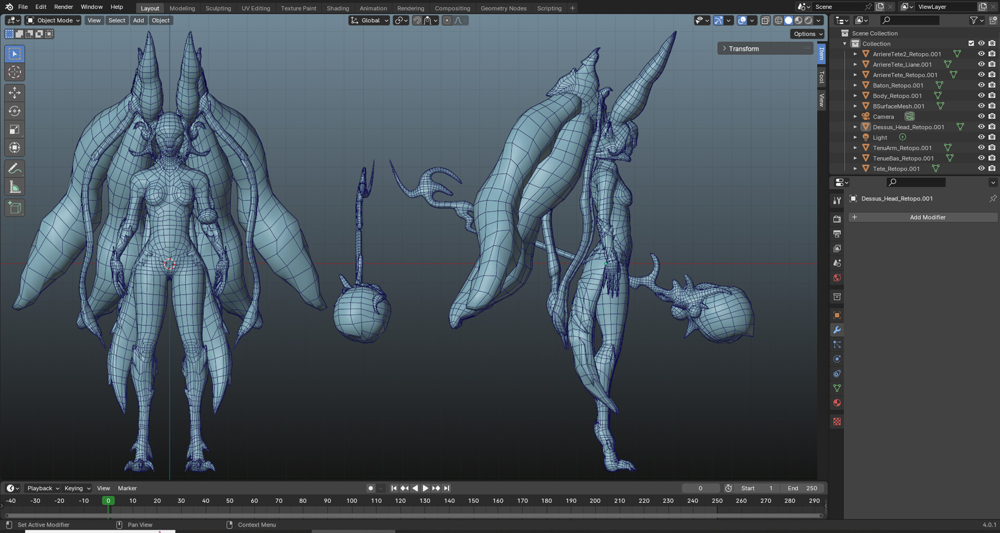
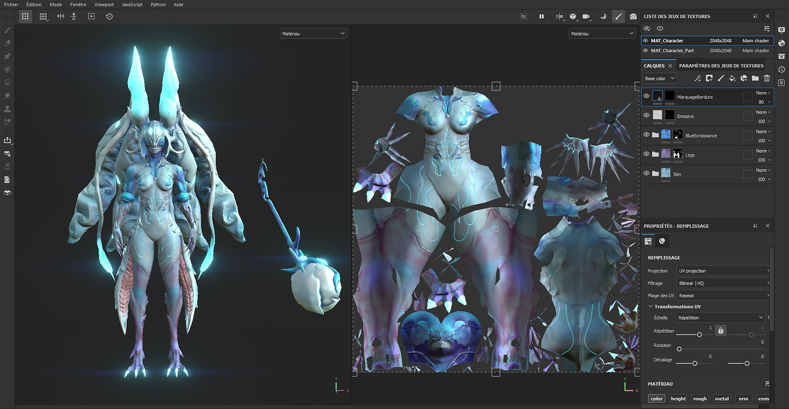
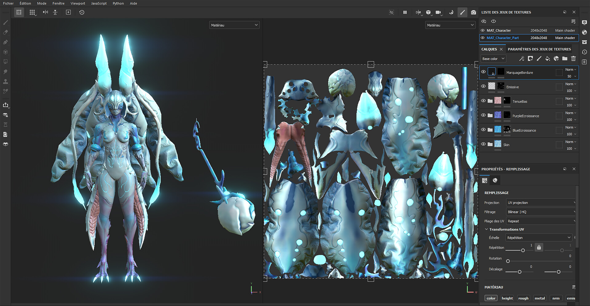
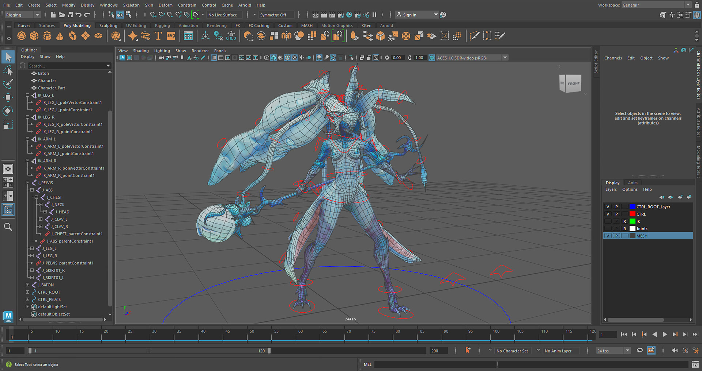
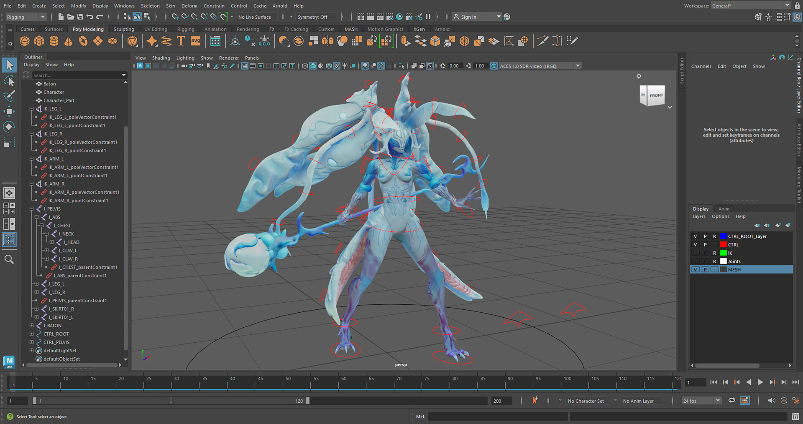
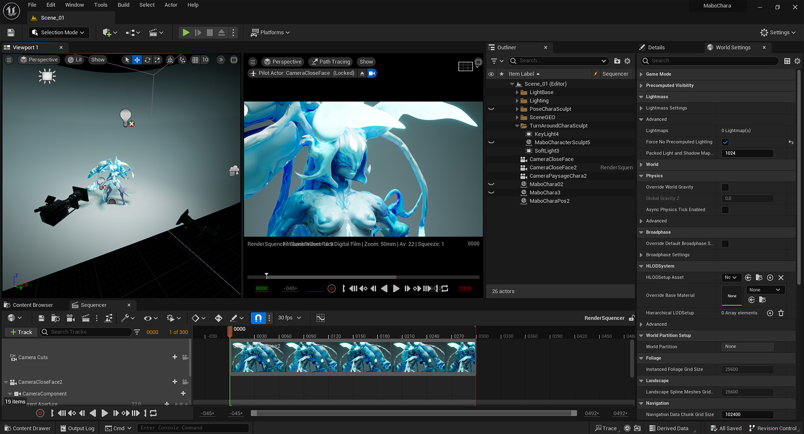
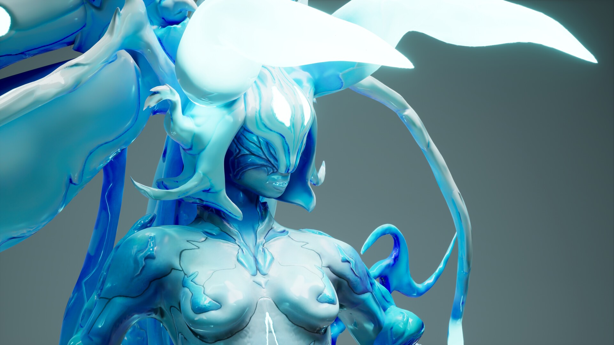
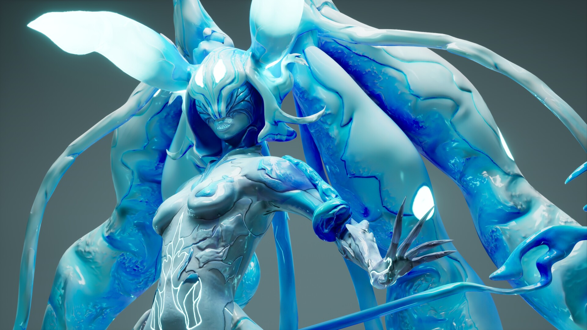

SculptingSculpture
This was my first few weeks with ZBrush, and my first project on the software. I started modeling directly in ZBrush, beginning with a study of human anatomy as if I were doing a complete study. Then I added the outgrowths until I reached the desired result. C'étaient mes premières semaines sur ZBrush, et mon premier projet sur ce logiciel. J'ai commencé à modéliser directement dans ZBrush, en partant d'une étude d'anatomie humaine, comme pour une étude complète. J'ai ensuite ajouté les excroissances jusqu'à obtenir le résultat voulu.
RetopologyRetopologie
I normally do retopology in Maya, but I wanted to start using Blender to get more familiar with the software. I retopologized the sculpted version to make it easier to unwrap for texturing, and to give the rig a game-ready base. D'habitude, je fais la retopologie dans Maya, mais je voulais commencer à utiliser Blender pour me familiariser avec le logiciel. J'ai retopologisé la version sculptée pour faciliter le dépliage des UV avant le texturing, et pour donner au rig une base game-ready.

Texturing
Texturing sits at the same level as the rig in the pipeline, but I prefer to texture first for visual comfort during rigging. I mainly used map bakes and gradient work to build the character's texture, with hand-painting in some areas. Dans le pipeline, le texturing se situe au même niveau que le rig, mais je préfère texturer d'abord, pour le confort visuel pendant le rigging. J'ai surtout utilisé des maps bakées et des dégradés pour construire la texture du personnage, avec de la peinture à la main à certains endroits.


Rig
I could have settled for an auto-rig to pose the model, but I prefer to build the rig myself, for learning and skill development. The rig is recreated each time I need to pose or animate the model. J'aurais pu me contenter d'un auto-rig pour poser le modèle, mais je préfère construire le rig moi-même, pour apprendre et progresser. Le rig est refait chaque fois que je dois poser ou animer le modèle.


RenderingRendu
I chose Unreal Engine to showcase this project because I have been working extensively with it, both for learning and for this year's project, a video game. It is also a way to grow the skills that connect my Houdini work to Blueprint. J'ai choisi Unreal Engine pour présenter ce projet parce que je l'utilise beaucoup, à la fois pour apprendre et pour le projet de cette année, un jeu vidéo. C'est aussi une façon de développer les compétences qui relient mon travail sur Houdini aux Blueprints.

Final RendersRendus finaux
The finished creature, lit and rendered in realtime in Unreal Engine 5. La créature terminée, éclairée et rendue en temps réel dans Unreal Engine 5.

